STORY
からくり好きの女の子の、ちこくできない朝
からくり作りが大好きな女の子、ことの。ちこくぐせを直すために、部屋のドアに「おでかけ計画ロック」をつけました。
ところが、その計画をぜんぶ謎にしてかくしてしまって……。お部屋のしかけを解いて、レトロな電車「からくり号」に乗って、開店前のカフェまで。
絵はやわらかい水彩。こわい場面や、急におどろかせる演出はありません。
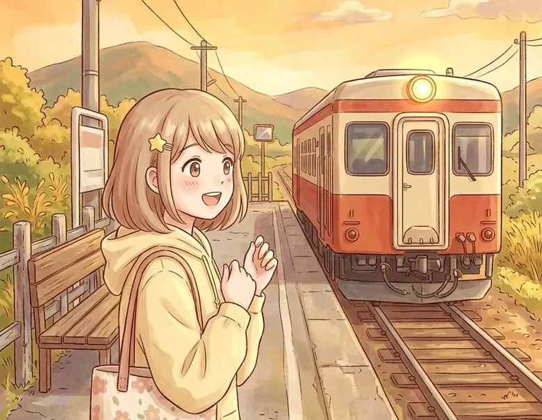
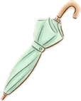
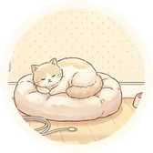
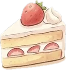
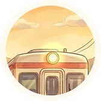
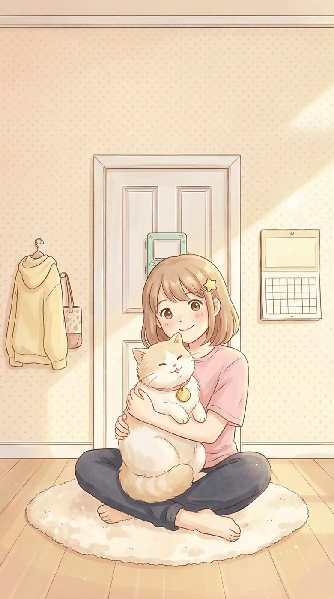
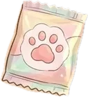
無料の脱出ゲーム
今日は友だちのカフェがオープンする日。なのに、自分で作った「おでかけ計画ロック」が開かない。お部屋から、電車、カフェへ。ことのといっしょに出かけよう。
App Store で入手 無料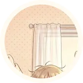
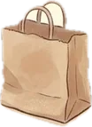
STORY
からくり作りが大好きな女の子、ことの。ちこくぐせを直すために、部屋のドアに「おでかけ計画ロック」をつけました。
ところが、その計画をぜんぶ謎にしてかくしてしまって……。お部屋のしかけを解いて、レトロな電車「からくり号」に乗って、開店前のカフェまで。
絵はやわらかい水彩。こわい場面や、急におどろかせる演出はありません。


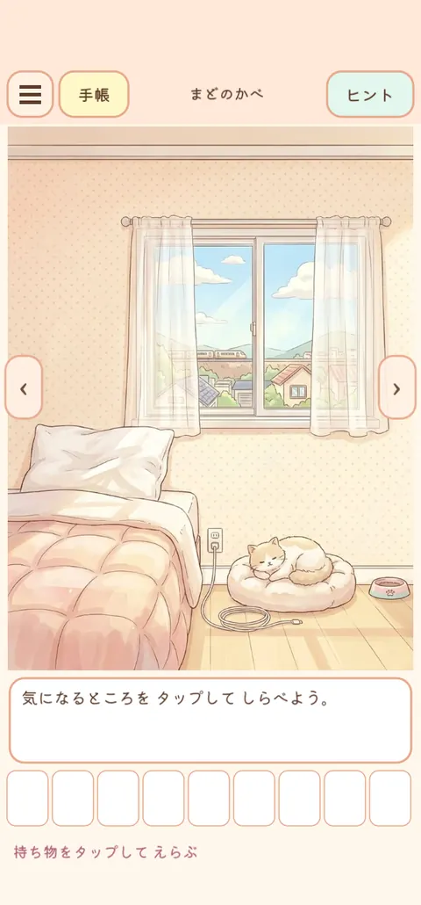
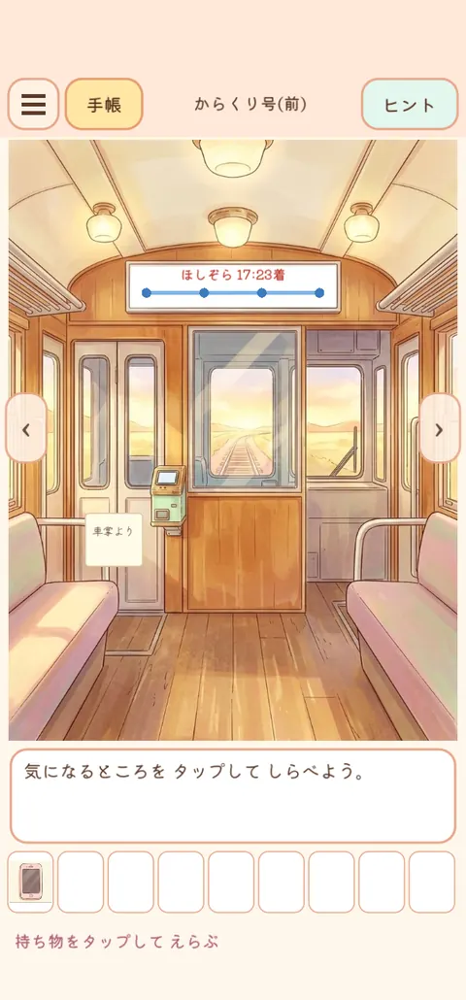
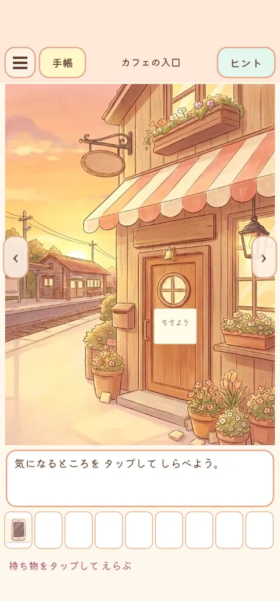
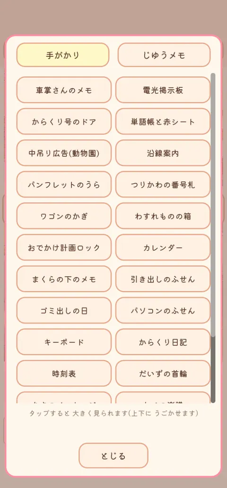
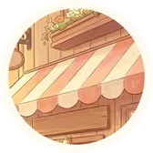
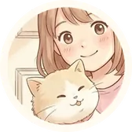
POINT
カレンダー、時刻表、楽譜。見慣れたものの中に、答えへの道がかくれています。
HOW TO PLAY
はじめての脱出ゲームでも、すぐに遊べます。
HINT & PRICE
遊ぶ前に知っておきたいことを、正直に書いておきます。
Q&A
ほかに困ったことはサポートへどうぞ。
はい、無料です。アプリ内課金はありません。部屋をクリアしたときの全画面広告と、ヒントを見るときの動画広告があります。
部屋は3つです。部屋ごとに区切りがあり、進み具合は自動でセーブされるので、1部屋ずつ遊んでも大丈夫です。タイトルの「つづきから」で続きを遊べます。
カレンダーや時刻表など、身近なものを手がかりに解く謎です。いくつかの手がかりを合わせて1つの答えを出す謎も、どの部屋にもあります。困ったときはヒントがあります。
右上の「ヒント」から、3段階のヒントを見られます。3つめは答えなので、先へ進めなくなることはありません。動画は最後まで見て閉じると、ヒントが1つ出ます。電波の弱いところでは、動画を読みこめないことがあります。
ありません。明るい水彩の絵で、急におどろかせる場面もありません。
左上の「手帳」に、見た手がかりが自動でのこっています。気づいたことは「じゆうメモ」に書いておけます。
ゲームのデータは端末の中にだけ保存されるため、引き継ぎはできません。アプリを削除すると、データも消えます。
「ルピナと星の塔」とは、主人公もお話も別々です。どちらから遊んでも大丈夫です。
いまは iPhone 版だけです(iOS 15 以上)。
SERIES
脱出ゲームは、1作ごとに主人公もお話も別々です。どこからでもどうぞ。